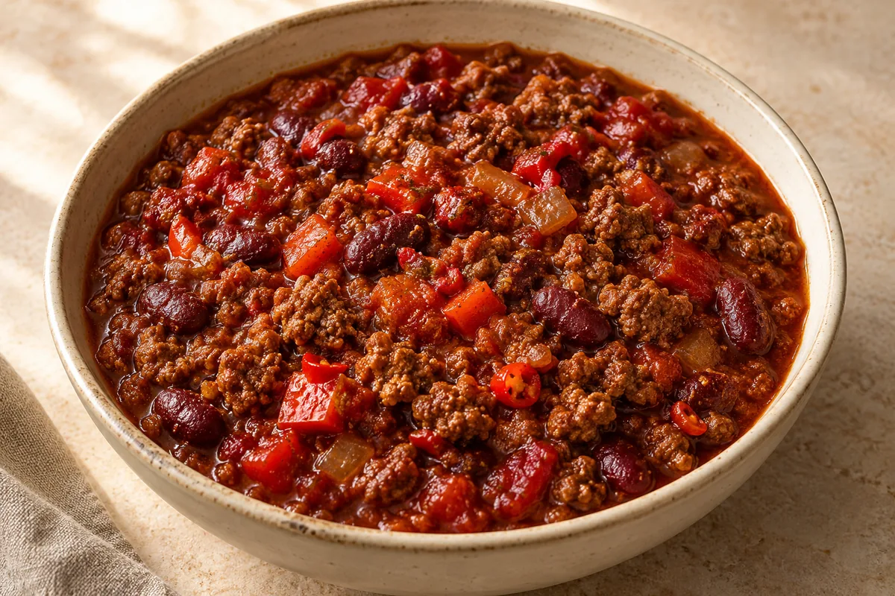

Slow Cooker
Slow Cooker Smoky Hot Chilli Con Carne
A rich, spicy beef chilli with kidney beans, fresh red chillies, smoky chipotle and a little dark chocolate.

Ingredient quantities update automatically
Ingredients
Ingredients
Method
Heat the oil in a frying pan over a medium-high heat. Add the mince and onion and fry for 6–8 minutes, breaking up the mince, until browned.
Add the garlic, tomato purée, cumin, paprika, coriander, hot chilli powder, fresh chillies, chipotle paste, optional cayenne and oregano. Stir for 1 minute.
Transfer to the slow cooker. Add the pepper, chopped tomatoes, kidney beans, stock cube, Worcestershire sauce and sugar. Stir together. Do not add water; the vegetables release liquid as they cook.
Cover and cook on low for 6–8 hours or high for 3–4 hours.
Stir in the dark chocolate during the final 15 minutes. If you want it thicker, cook on high with the lid off for the final 20–30 minutes, if your slow cooker’s instructions allow.
Taste and season with salt and pepper. Fresh chillies vary in strength, so taste before adding any extra cayenne.